🌿 Restaurante Campestre
Ingredientes frescos, tradición viva y una vista al campo que nunca olvidarás.
Nuestros Platos
Platos preparados al momento con el sabor tradicional de Oro Mar.
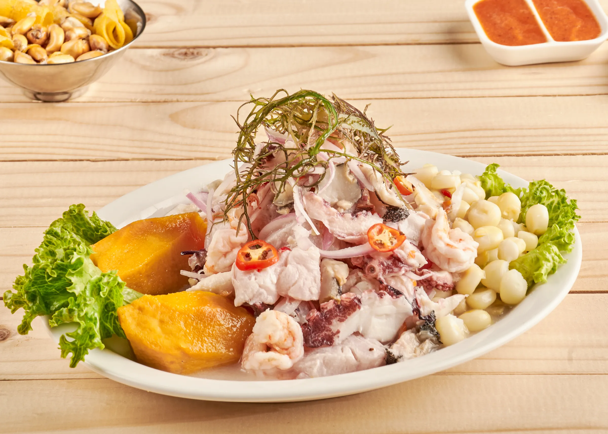
Pescado y mariscos frescos marinados con limón, cebolla y ají.
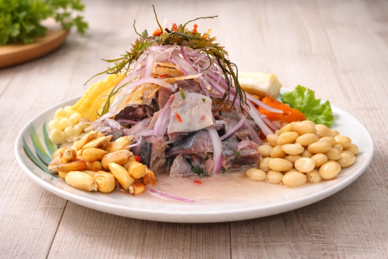
Caballa fresca preparada con limón, cebolla, ají y culantro.
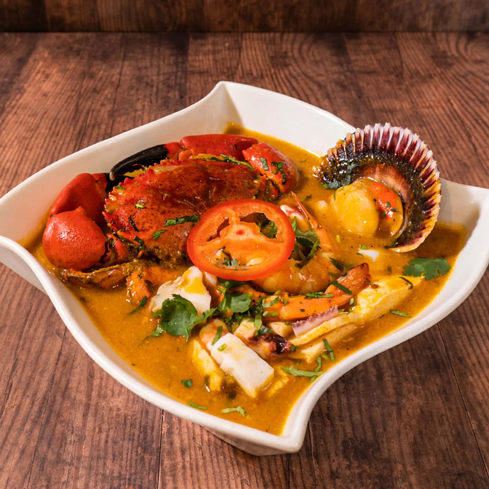
Caldo criollo concentrado con pescado, mariscos y sazón de casa.
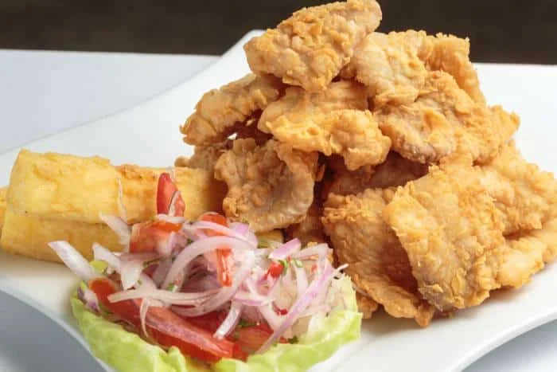
Pescado crocante acompañado con yuca, ensalada y cremas.
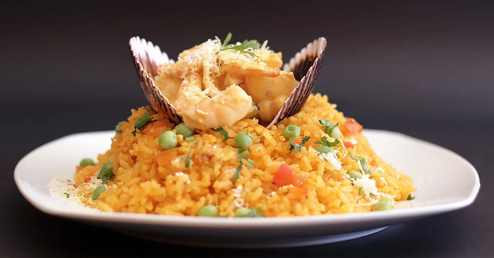
Arroz o chaufa preparado con mariscos frescos y sazón especial.
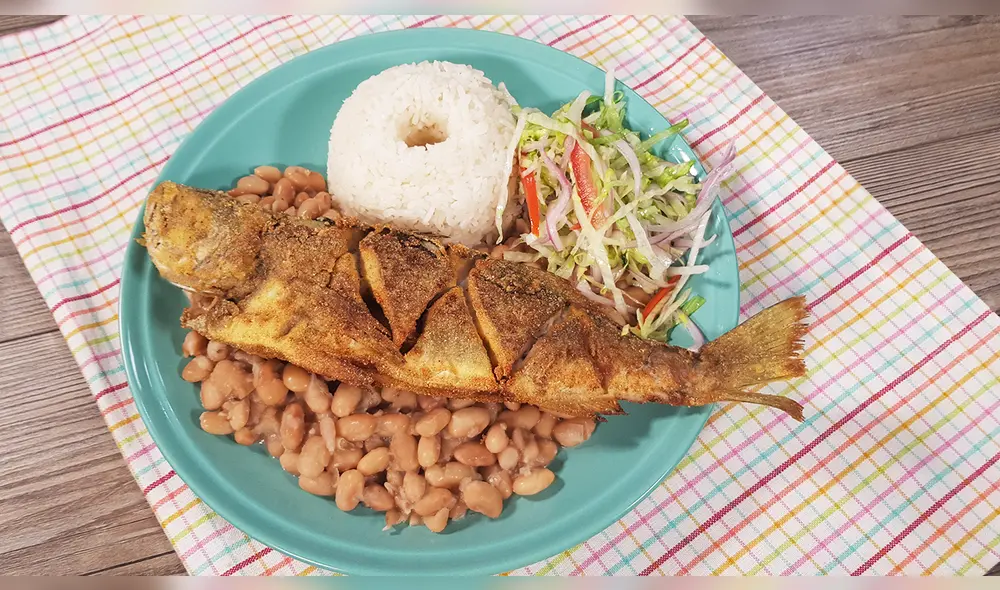
Pescado dorado servido con arroz, ensalada y guarnición.
Galería
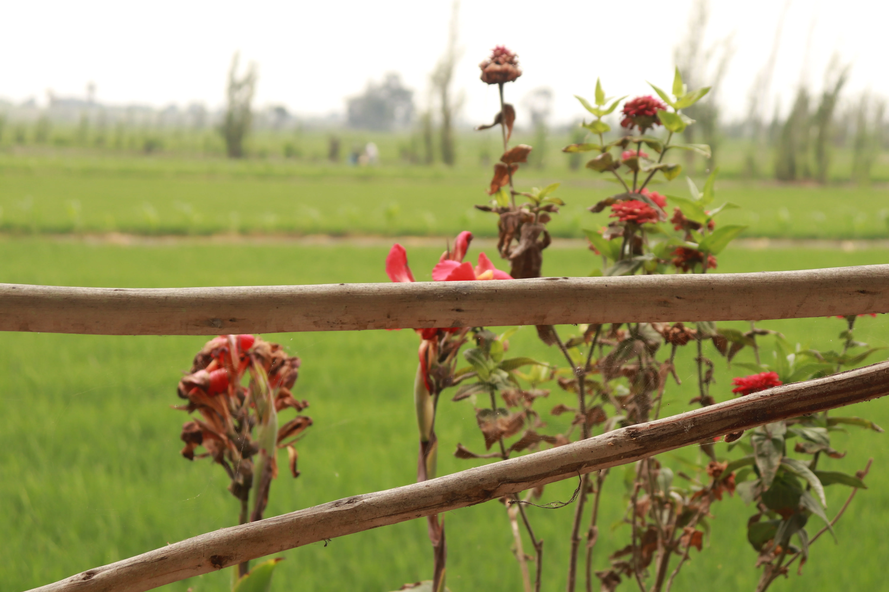
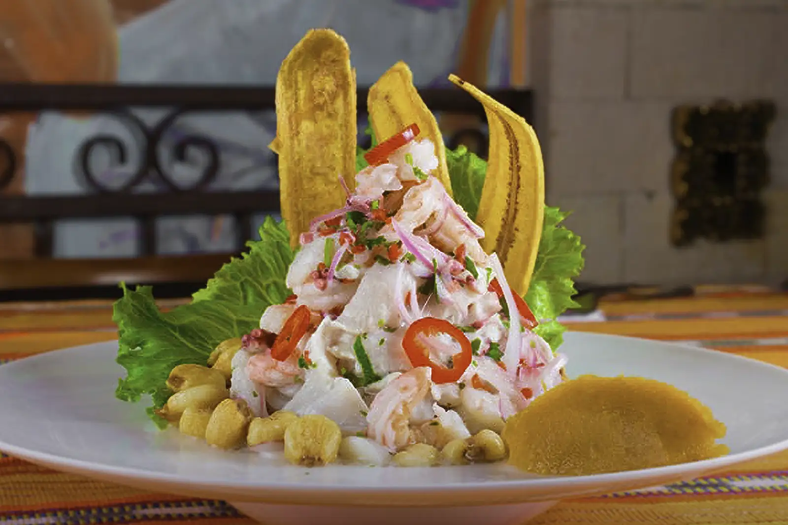
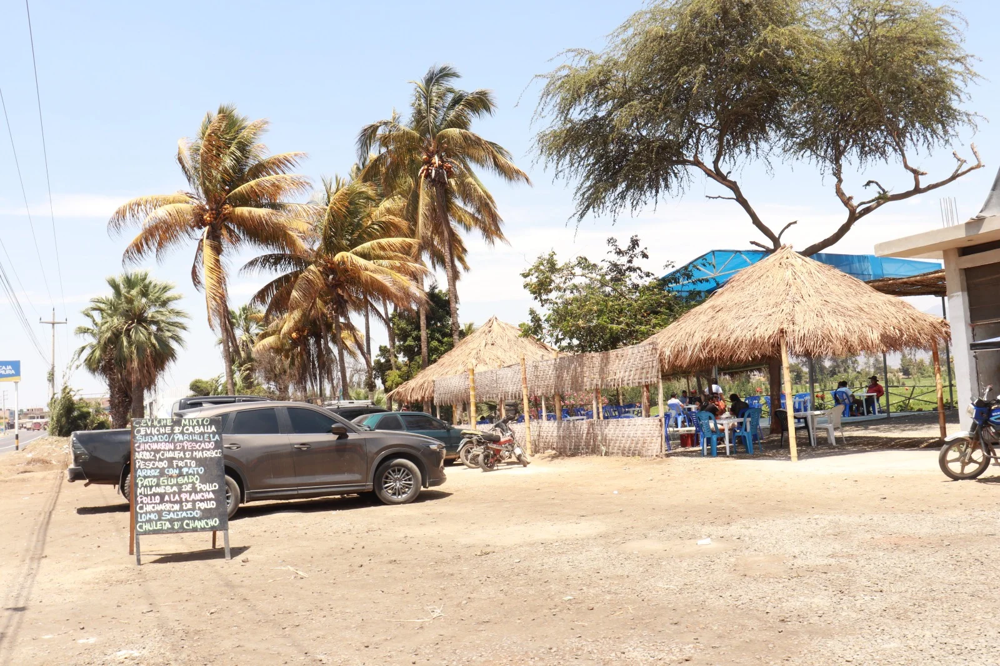
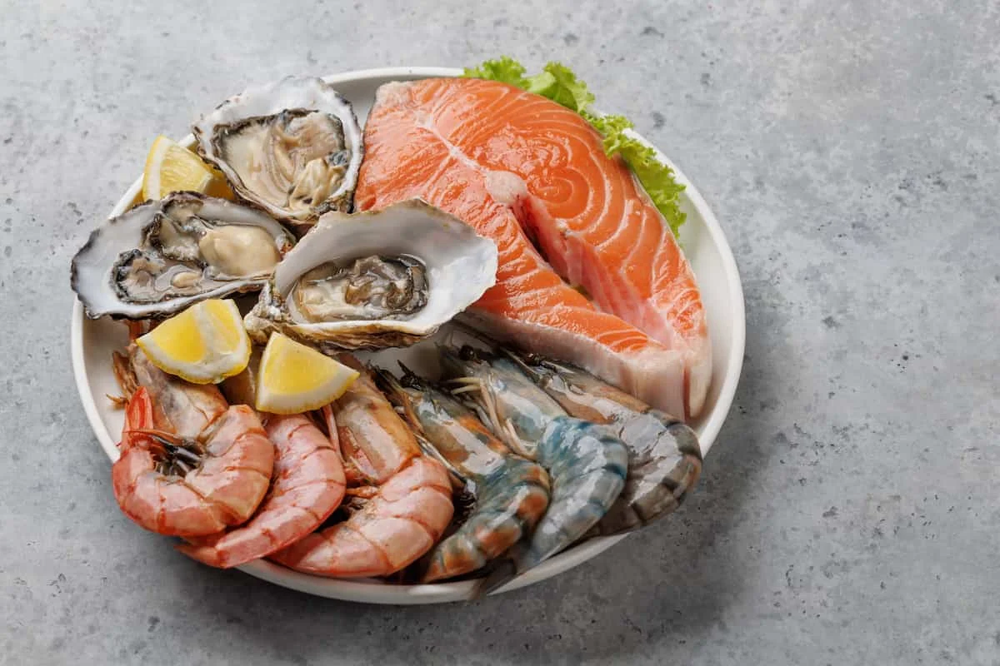
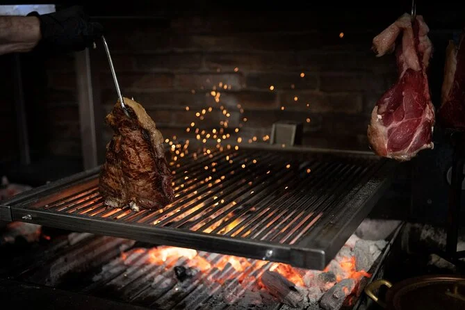
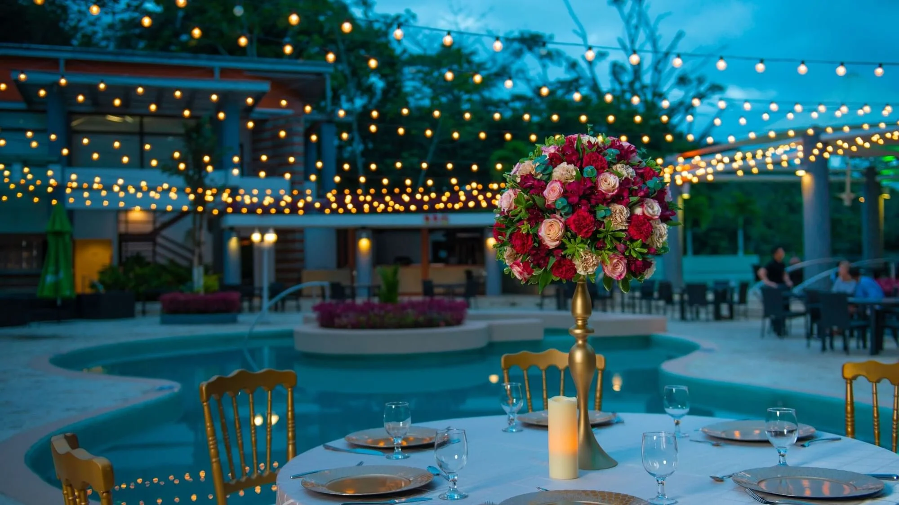
Reservaciones
Conoce nuestros espacios y consulta directamente sobre mesas y eventos.
Disfruta de nuestra carta, espacios campestres y un ambiente ideal para compartir en familia o con amigos.
Para consultar sobre la disponibilidad de mesas y eventos, comunícate directamente con el restaurante a través de sus canales oficiales.
Ver información de contactoNuestra Historia
Nacimos en el corazón de la campiña peruana, donde el aroma del campo se mezcla con la brisa marina. Desde 2012, nuestra cocina fusiona los mejores mariscos frescos con la calidez de una gastronomía campestre auténtica.
Cada plato es una historia: ingredientes traídos directamente de pescadores y agricultores locales, preparados con técnicas que han pasado de generación en generación.
Abastecimiento local cada mañana
15 años de trayectoria gastronómica
3,000 m² de jardines naturales
Mejor restaurante campestre 2023
12 años cocinando con alma
Chef José Clemente Barboza Vázquez
Cocina sostenible
Encuéntranos
Ctra. Panamericana N 170
Referencia: entrada a Pacanguilla,
La Libertad, Perú
Lun–Vie: 10:00 – 18:00
Sáb–Dom: 10:00 – 20:00
Sabores tradicionales y ambiente campestre.